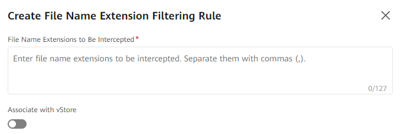

Known ransomware file name extensions to be intercepted are preset in the system. You can refer to this section to add file name extensions.
The Create File Name Extension Filtering Rule dialog box is displayed.

Table 1 describes the related parameters.
Parameter |
Description |
|---|---|
File Name Extensions to Be Intercepted |
File name extensions to be intercepted. You can enter one or more file name extensions. [Value range]
|
Associate with vStore |
Indicates whether to associate with vStores.
NOTE:
The preset file name extension filtering rules are associated with all vStores in the system by default. |